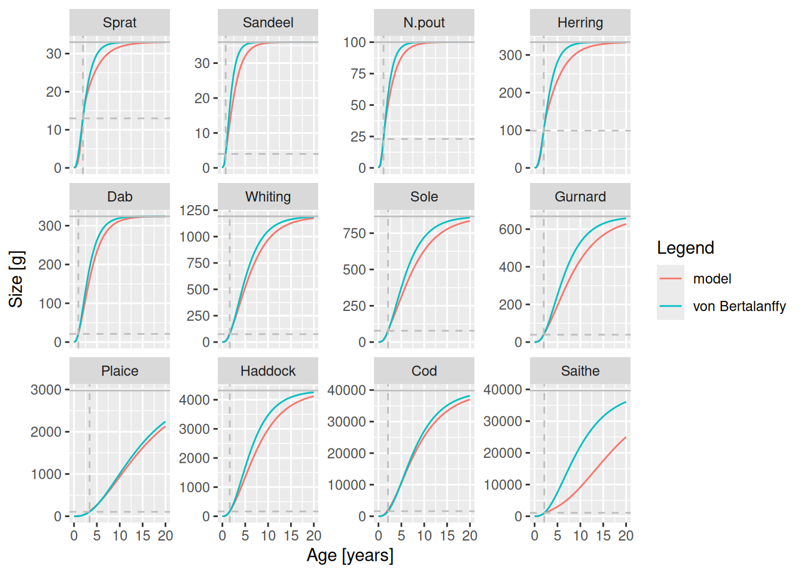
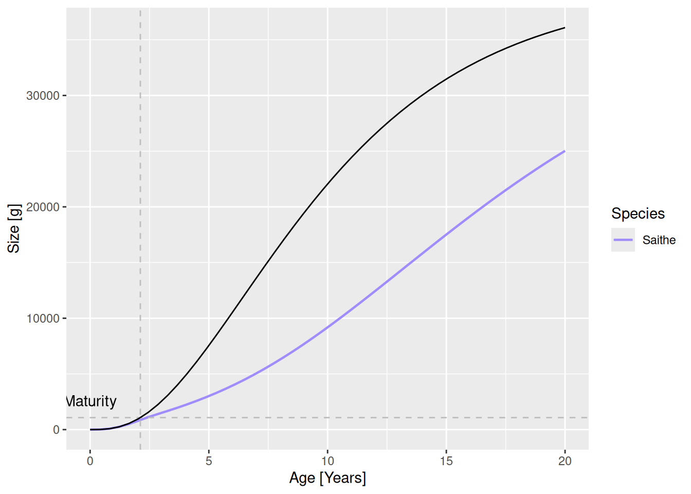
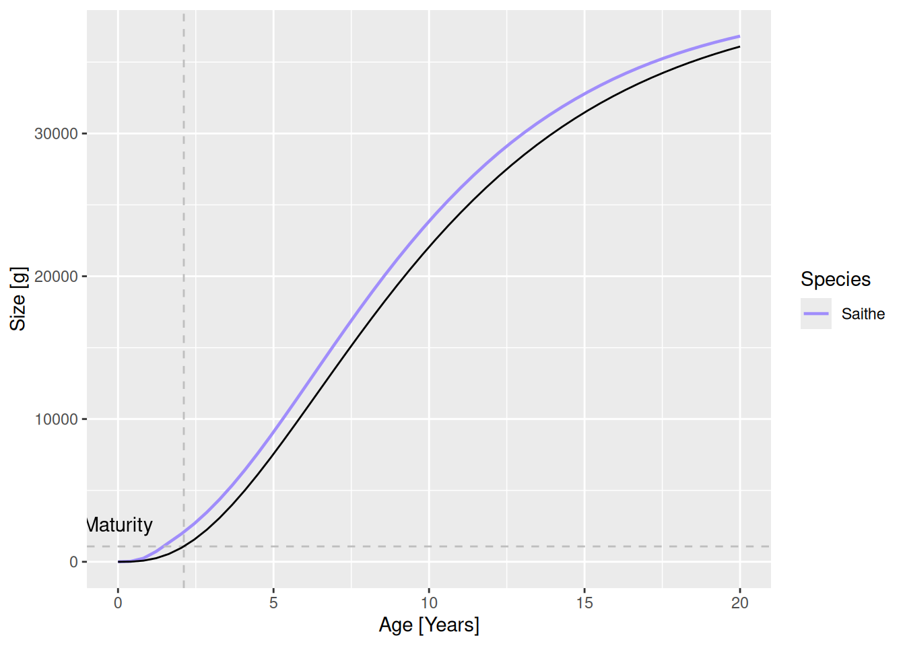
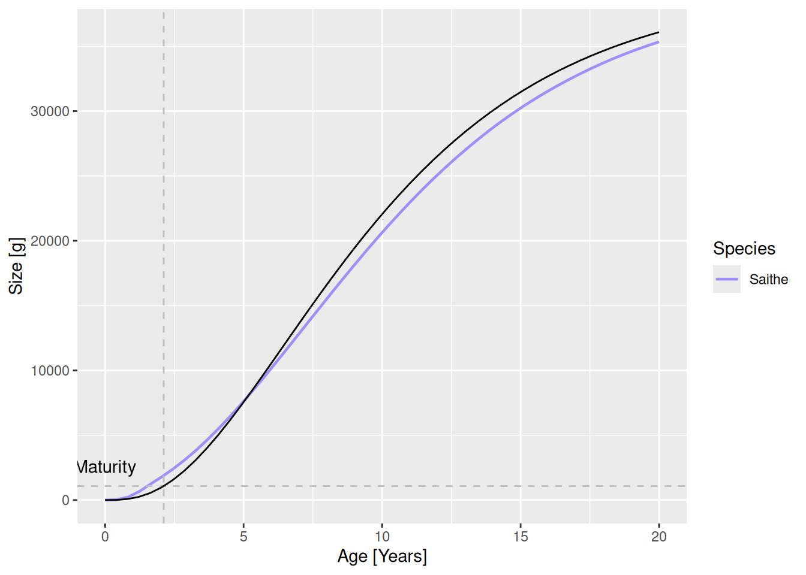
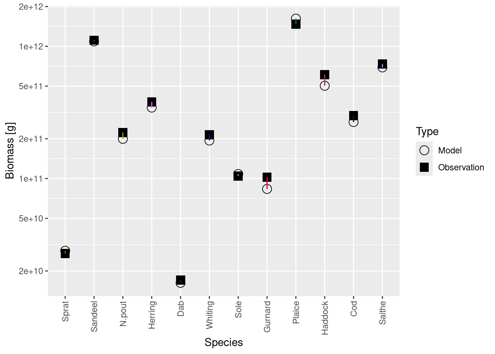
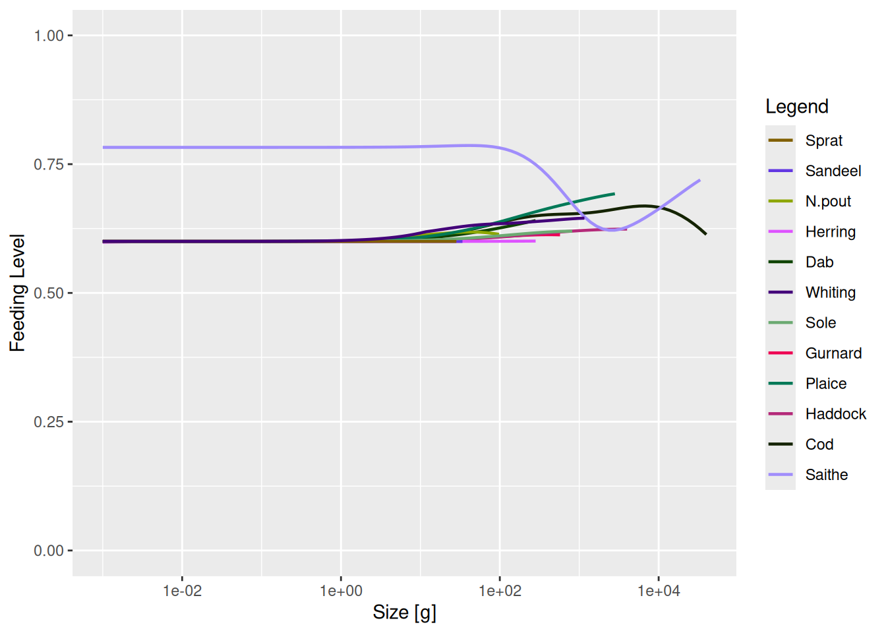
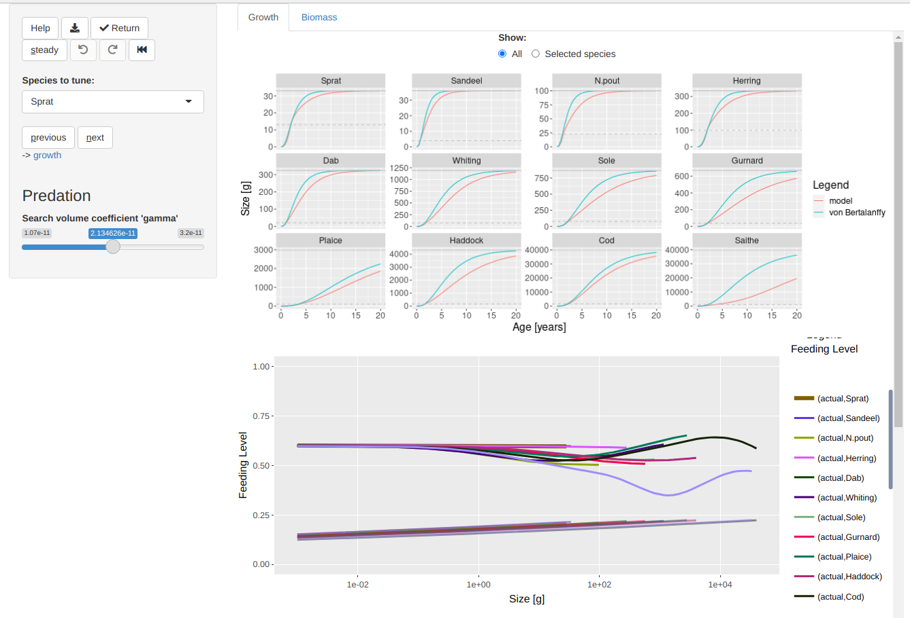
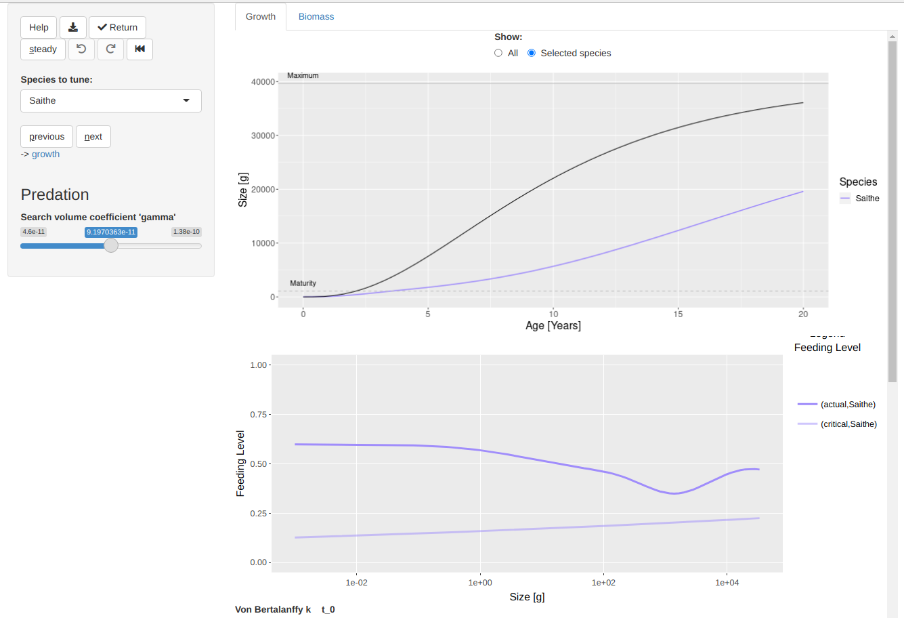
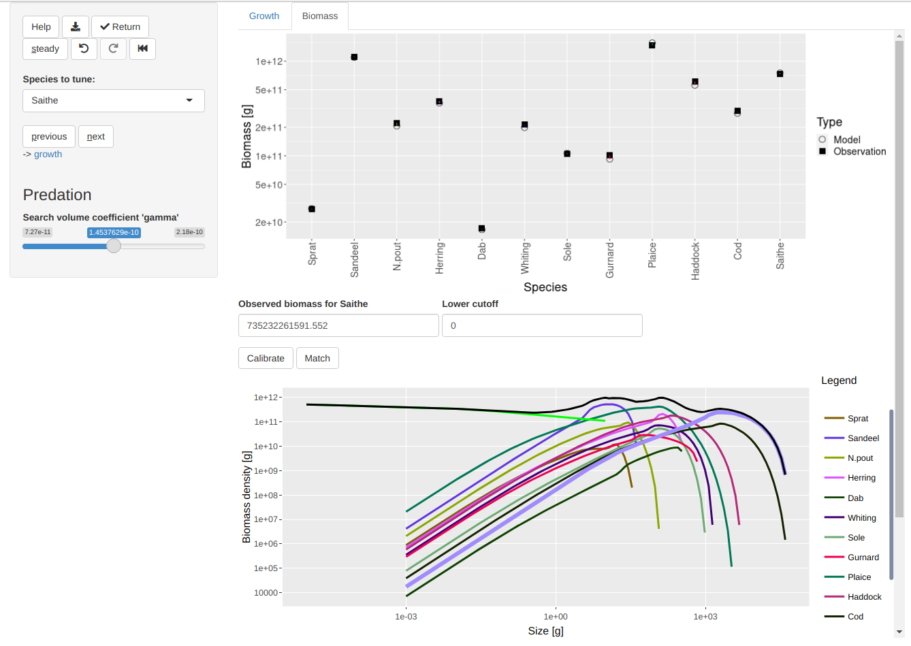

I present to you a new shiny gadget that makes tuning a model to reproduce the desired growth curves feel like child’s play. And this is only a first glimpse of the future of interactively tuning mizer models.
In a previous blog post I presented a new method for tuning a mizer model to reproduce observed values for species biomasses. In the example I used there, after matching the biomasses also the growth curves had a pretty good agreement with observations. However I already warned you that that was unusual, and that you are highly unlikely to have similar luck with your own model. So in this blog post I will show you what to do if the growth curves in your model need to be adjusted.
This will give me an opportunity to introduce you to the mizer tuning gadget, which is an amazing interactive tool that eventually will be useful for much more than just matching growth curves.
Setting up an example
I will use the same species parameters and gear parameters for a North Sea model that I used in my previous blog post, but I will now also use the species interaction matrix NS_interaction that comes as an example with mizer, and which encodes that, due to only partial spatial overlap, not all species interact with each other with the same strength. With those parameters we can create the mizer model and make an initial plot of the steady state:
Because you have n != p, the default value for `h` is not very good.
Because the age at maturity is not known, I need to fall back to using
von Bertalanffy parameters, where available, and this is not reliable.
No ks column so calculating from critical feeding level.
Using z0 = z0pre * w_max ^ z0exp for missing z0 values.
Using f0, h, lambda, kappa and the predation kernel to calculate gamma.
params<-steady(params)
Convergence was achieved in 16.5 years.
plotlySpectra(params, power =2)
As discussed in that previous post, matching to the observed biomasses is easy:
Warning in setBevertonHolt.MizerParams(params): For the following species `erepro` has been increased to the smallest possible value: erepro[Sprat] = 0.021; erepro[Sandeel] = 0.000425; erepro[Cod] = 6.12e-05; erepro[Saithe] = 1.23e-05
Convergence was achieved in 15 years.
Warning in setBevertonHolt.MizerParams(params): For the following species `erepro` has been increased to the smallest possible value: erepro[Whiting] = 0.000257; erepro[Haddock] = 0.000163; erepro[Cod] = 6.11e-05
Convergence was achieved in 12 years.
plotBiomassVsSpecies(params)
The matching did not work quite so well for Saithe, and it will become clear in a moment why that is. Let us plot the growth curves:
plotGrowthCurves(params, species_panel =TRUE)

It is clear to see that the growth is too low for all species, but particularly so for Saithe.
plotGrowthCurves(params, species ="Saithe")

Saithe takes almost twice as long to reach maturity as is predicted by the von Bertalanffy growth curve. So we need to do some tuning. Before we start with that, we’ll save the current state into a new variable.
params_start<-params
If you want to try things for yourself, you can load this example MizerParams object with
Now I am going to try to get the growth curve of Saithe in the model to agree with the observed growth curve, without using the new tuning gadget. I am doing that because it might be useful to understand what goes on under the hood in the tuning gadget. But I am also doing it to show off how much of an advance the tuning gadget represents. So let’s start.
Clearly we need to get Saithe to feed more rapidly. We can do that by increasing the coefficient gamma in the search volume. We don’t know how much we need to increase gamma exactly, so we try a factor of 2.
species_params(params)[["Saithe", "gamma"]]<-2*species_params(params)[["Saithe", "gamma"]]plotGrowthCurves(params, species ="Saithe")
That helped, but is not enough. So we can try again, increasing gamma a bit further.
species_params(params)[["Saithe", "gamma"]]<-1.2*species_params(params)[["Saithe", "gamma"]]plotGrowthCurves(params, species ="Saithe")

Unfortunately, while we have improved the growth curve by changing gamma, we have at the same time messed up other aspects of the model. For one thing, our initial spectra don’t represent a steady state any more. So we have to use steady() again:
params<-steady(params)
Convergence was achieved in 12 years.
Now this has allowed the full effect of multi-species interaction to take hold and, due to increased competition.
plotGrowthCurves(params, species ="Saithe")

We have also messed up the biomasses of some of the species, in particular Gurnard and Haddock, as it turns out:
Warning in setBevertonHolt.MizerParams(params): For the following species `erepro` has been increased to the smallest possible value: erepro[Whiting] = 0.00029
Convergence was achieved in 12 years.
plotBiomassVsSpecies(params)

But there is another aspects of the model that we have messed up. Let’s plot the feeding level.
plotFeedingLevel(params)

The feeding level describes how satiated a fish is. The closer to 1, the more satiated the fish is and the less sensitive it therefore is to changes in prey availability. We have now made Saithe less sensitive than other species, without actually intending to do that. What we probably should have done is to change the parameter h that controls the maximum intake rate, and thus the density dependence in feeding, at the same time as gamma so as to keep the feeding level constant, at least for larvae.
I think this is enough to explain what is involved in tuning a model to reproduce the desired growth curves and to demonstrate that it was a very tedious task in the past. We have only partially dealt with the growth curve of a single species and already are exhausted.
How easy it is now
The previous section showed us that tuning model parameters by hand is very tedious and it will take ages before we have the model in the shape we want it to be in. I’ll now discuss how to do it much faster. There are three things we need to do to make this faster solution possible:
Make the process interactive so that we can just click around with the mouse instead of issuing long sequences of commands.
Intelligently adjust several parameters at a time to avoid messing up other aspects of the model while we are trying to fit the growth curves.
Automatically recalibrate and match biomasses whenever we determine a new steady state.
I would like you to try it out yourself, so please copy and paste the commands below to your RStudio console and run them.
As always we start by installing the latest version of the mizerExperimental package and loading it. The install_github() will do nothing if you already have the latest version installed. Otherwise it may prompt you to also update other packages for which there are newer versions available. You should always agree to update mizer if that is suggested.
This will open a new tab in your browser that looks a bit like the following screenshot:

This shows two plots that are already familiar to you if you have read the previous section: the upper plot shows the growth curves and the lower plot shows the feeding levels. To the left of the plots there is a sidebar with various controls. One lets you choose which species you are currently dealing with. There is a slider to change the value of gamma. There is a button labelled “steady” that will find the steady state. So this is all very familiar.
However there are also some unfamiliar buttons in the sidebar:
“Help” opens a short tour of the user interface
“Download” (icon) downloads the current MizerParams object
“Return” closes the gadget and returns the current MizerParams object back to R, where with the code we used above it will then be assigned to params.
“Undo”, “Redo” and “Rewind” (icons) allow you to go back to a previous steady state, go forward again, or rewind all the way back to your starting state.
“previous” and “next” let you conveniently cycle through all the species.
There are some hidden features, that are however revealed in popups while you hover over elements. For example you can select a particular species quickly by clicking on its growth curve. You can switch to a single-species view by double-clicking on a species. Here is what you will get after double-clicking on “Saithe”:

Now you know what to do: use the slider on the left to increase gamma. You can do that either by sliding or by clicking somewhere along the slider. You will notice that the graphs on the right immediately update. This makes it really easy to select the value you want.
You will also notice that the feeding level for the larvae remains unchanged as you change gamma. That is because the gadget automatically changes the maximum intake rate to compensate for your change in ‘gamma’.
Don’t spend too much time tuning the growth curve for Saithe, because we know that the von Bertalanffy curve is also just an approximation to the true growth curve, and also because we know that things will change a bit again when you click the “steady” button. Instead use the “previous” button to go to fix the growth curve for Cod and so on.
You can also always double click on a single-species growth curve (or use the radio buttons above the plot) to go back to viewing all species at once.
You will have noticed that the main panel of the gadget has two tabs. The one we are currently viewing is called “Growth”. Clicking on “Biomass” gives us more familiar plots:

The upper plot is the plot comparing the model biomasses to the observed biomasses and the lower plot shows the size spectra. You don’t need to do anything on this tab. It is there just to reassure you that you have not messed up anything in your model. In particular, the model biomasses will match the observed biomasses very well. This is because behind the scenes the gadget calibrated and matched the biomasses each time you hit the “steady” button. If you don’t find that they agree well, then click the “steady” button now. There is never any harm in pressing the “steady” button.
Once you are happy with all your growth curves you can hit the “Return” button. Because we specified above that we wanted to assign the return value of tuneGrowth() to a variable params, you can now work further with this MizerParams object under the name params.
The future
This gadget for tuning growth curve is actually only a particular instance of a more powerful shiny gadget with many more controls and many more tabs, which allows you to adjust almost any model parameter and investigate many different aspects of you model. For example there is a tab for looking at the diets of the various species and how they change with size, a tab to look at the causes of death at various sizes, a tab to compare the size distribution of the catches in the model to observed size distributions, …
I have been told that the full gadget, that you can start with
is overwhelming, even though it does not yet have all the tabs and controls that I envisage. The tuneParams() function therefore allows us to just select just the bits we need for a particular task. The tuneGrowth() gadget is actually just what you get when you tell tuneParams() that you want the “growth” control and the “Growth” and “Biomass” tabs.
So I think that very soon we will have a large set of targeted tools similar to tuneGrowth() to facilitate various stages of the model tuning process, but also one very powerful combined tool for those of us who like the Swiss army knife approach.
Now, quite likely, when you try this with your own model you will run into problems. I am always eager to hear about those problems. Post about them in the comments or email them to me at gustav.delius@gmail.com.